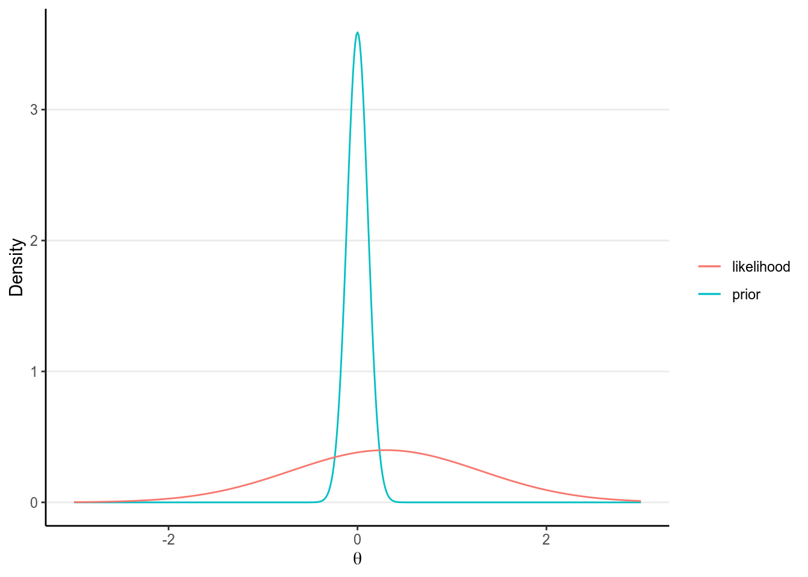
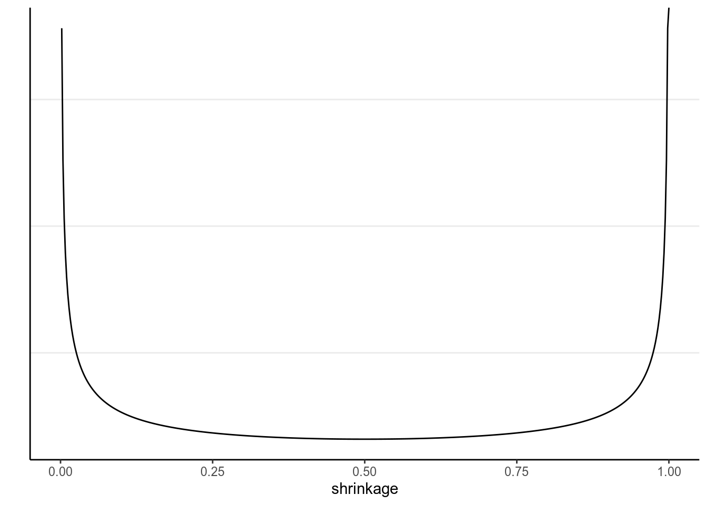

Chapter 9 Model Comparison and Regularization
9.1 Overfitting and Underfitting
In statistical modeling, a more complex model almost always results in a better
fit to the data. Roughly speaking, a more complex model means one with more
parameters, although as you will see later, in Bayesian analyses, number of
parameters is sometimes not straight forward to find out. On the extreme side,
if one has 10 observations, one can has a model with 10 parameters that can
perfectly predict every single data point (by just having a parameter to predict
each data point). However, there are two problems with too complex a model.
First, an increasingly complex model also makes it increasingly hard to extract
useful information from the data. Instead of describing the relationship between
two variables, like mom_iq and kid_score, by a straight line, one ends up
with a crazy model that is difficult to make sense. Second, as you will also
see, the more complex a model, the more is the risk that it overfit the
current data such that it does not work for future observations.
For example, let’s randomly sample 10 cases in the kidiq data set, and build
some model from it.
kidiq <- haven::read_dta("../data/kidiq.dta")
kidiq100 <- kidiq %>%
mutate(mom_iq = mom_iq / 100, # divid mom_iq by 100
kid_score = kid_score / 100, # divide kid_score by 100
mom_iq_c = mom_iq - 1,
mom_hs = factor(mom_hs, labels = c("no", "yes")))set.seed(1533) # set the seed for reproducibility
# Sample 10 observations
train <- sample.int(nrow(kidiq), 10L)
kidiq_sub <- kidiq[train, ]
base <- ggplot(aes(x = mom_iq, y = kid_score),
data = kidiq_sub) +
geom_point(size = .9) +
coord_cartesian(ylim = c(-120, 180)) +
xlim(range(kidiq$mom_iq))
ggplot(aes(x = mom_iq, y = kid_score), data = kidiq) +
geom_point(size = .7, col = "lightblue") +
geom_point(size = 1.1, data = kidiq_sub, col = "red") +
xlim(range(kidiq$mom_iq))
When using mom_iq to predict kid_score, we can use beyond a linear
regression line by using higher order polynomials. For example, a second-order
polynomial assumes a quadratic effect (with one turning point), and it goes to
cubic, quartic, and more. The figure below shows the fit from a linear effect of
mom_iq, a quadratic effect, and increasingly complex to a six degree
polynomial. As you can see, as the model gets more complex, the fitted line
tries to capture all the 10 points really well, with an increasing \(R^2\).
However, also note that the standard error around the fitted line gets, meaning
that there are more uncertainty when the model gets more and more complex.
r2 <- function(object) {
# Function for computing R^2
z <- object
f <- z$fitted.values
r <- z$residuals
mss <- if (attr(z$terms, "intercept"))
sum((f - mean(f))^2)
else sum(f^2)
rss <- sum(r^2)
mss / (mss + rss)
}
p_list <- map(1:6, function(i) {
mod <- lm(kid_score ~ poly(mom_iq, degree = i), data = kidiq_sub)
base +
geom_smooth(method = "lm", formula = y ~ poly(x, i), level = .80,
fullrange = TRUE) +
geom_text(x = 90, y = 170,
label = paste0("italic(R)^2 == ", round(r2(mod), 1)),
parse = TRUE) +
geom_text(x = 100, y = -100,
label = paste0("RMSE == ", round(sqrt(mean(residuals(mod)^2)), 1)),
parse = TRUE)
})
do.call(grid.arrange, c(p_list, nrow = 2))
Figure 9.1: Fit of models on the 10 random cases. Top panel: linear, quadratic, and cubic; bottom panel: 4th, 5th, and 6th degree polynomials
Another way to look at the accuracy of the model is to look at the Root Mean Squared Error (RMSE), which is defined as the square root of the average squared prediction error. This is a measure of prediction error. The smaller the RMSE, the better the prediction is. As you can see in the above figure, more complex models always reduce the RMSE in the data we use to fit the model (also called training data).
However, if I take the estimated regression line/curve based on the subsample of 10 observations, and predict the remaining cases in the data set, things will be different. As you can see in the figure below, whereas prediction error is comparable for the linear and the quadratic model, polynomials of higher degrees predict the data really badly. This is because when you use a complex model in a data set, it tailors the coefficients to any sampling errors and noise in the data such that it will not generalize to new observations. Therefore, our goal in model comparison is to choose a model that is complex enough to capture the essence of the data generation process (and thus avoid underfitting), but avoid overfitting as to make the model useless for predicting new observations.
base2 <- ggplot(aes(x = mom_iq, y = kid_score), data = kidiq[-train, ]) +
geom_point(size = .6) +
coord_cartesian(ylim = c(-120, 180)) +
xlim(range(kidiq$mom_iq))
p_list2 <- map(1:6, function(i) {
mod <- lm(kid_score ~ poly(mom_iq, degree = i), data = kidiq_sub)
f <- predict(mod, newdata = kidiq[-train, ])
y <- kidiq$kid_score[-train]
r <- y - f
rmse_mod <- sqrt(mean(r^2))
base2 +
geom_smooth(data = kidiq_sub, method = "lm", formula = y ~ poly(x, i),
fullrange = TRUE, level = .80) +
geom_text(x = 100, y = -100,
label = paste0("RMSE == ", round(rmse_mod, 1)),
parse = TRUE)
})
do.call(grid.arrange, c(p_list2, nrow = 2))Figure 9.2: Using the regression lines based on 10 random cases to predict the remaining 424 cases. Top panel: linear, quadratic, and cubic; bottom panel: 4th, 5th, and 6th degree polynomials
The goal of statistical modeling is to choose a model that is optimal between the overfitting/underfitting dichotomy. In machine learning, this is also commonly referred to as the bias-variance trade-off, as a model that is too simple tends to produce biased predictions because it does not capture the essence of the data generating process, whereas a model that is overly complex is unbiased but results in a lot of uncertainty in the prediction, because there are too many unnecessary components that can affect predictions, as indicated in the confidence bands around the 6th degree polynomial line.
Polynomials of varying degrees are merely one example of comparing simple to complex models. You can think about:
- models with and without interactions,
- models with a few predictors versus hundreds of predictors,
- regression analyses versus multilevel models, etc.
This lecture is about finding an optimal model that avoids overfitting and avoids underfitting. Whereas one can always avoid underfitting by fitting a more and more complex model, a more practical problem is to have some tools to refrain oneself from choosing a model that is too complex and predict future observations badly. In this note, you will learn to perform model comparison with information criteria to find a model that has better balance between overfitting and underfitting, while in the next note you will learn additional tools that synthesize multiple models and perform variable selection.
9.2 Kullback-Leibler Divergence
When comparing models (e.g., linear vs. quadratic), we prefer models that are closer to the “true” data-generating process. A model that are closer to the “true” model is better than a model that are not as close. Therefore, we need some ways to quantify the degree of “closeness” to the true model. Note that in this context models refer to the distributional family as well as the parameter values. For example, the model \(y_i \sim \mathcal{N}(5, 2)\) is a different model than \(y_i \sim \mathcal{N}(3, 2)\), which is a different model than \(y_i \sim \mathrm{Gamma}(2, 2)\). The first two have the same family but different parameter values (different means, same \(\mathit{SD}\)), whereas the last two have different distributional families (Normal vs. Gamma).
To measure the degree of “closeness” between two models, \(M_0\) and \(M_1\), by far the most popular metric in statistics is the Kullback-Liebler Divergence (or Kullback-Liebler discrepancy; \(D_\textrm{KL}\)). By definition,
\[\begin{align*} D_\textrm{KL}(M_0 | M_1) & = \int_{-\infty}^\infty p_{M_0} (\boldsymbol{\mathbf{y}}) \log \frac{p_{M_0}(\boldsymbol{\mathbf{y}})}{p_{M_1}(\boldsymbol{\mathbf{y}})} \; \mathrm{d}\boldsymbol{\mathbf{y}} \\ & = \int_{-\infty}^\infty p_{M_0} (\boldsymbol{\mathbf{y}}) \log p_{M_0}(\boldsymbol{\mathbf{y}}) \; \mathrm{d}\boldsymbol{\mathbf{y}} - \int_{-\infty}^\infty p_{M_0} (\boldsymbol{\mathbf{y}}) \log p_{M_1}(\boldsymbol{\mathbf{y}}) \; \mathrm{d}\boldsymbol{\mathbf{y}}. \end{align*}\]
Note that strictly speaking, \(D_\textrm{KL}\) cannot be called a “distance” between two models because in general, \(D_\textrm{KL}(M_0 | M_1) \neq D_\textrm{KL}(M_1 | M_0)\). As an example, assume that the data are generated by a true model \(M_0\), and we have two candidate models \(M_1\) and \(M_2\), where
- \(M_0: y \sim \mathcal{N}(3, 2)\)
- \(M_1: y \sim \mathcal{N}(3.5, 2.5)\)
- \(M_2: y \sim \mathrm{Cauchy}(3, 2)\)
ggplot(data.frame(x = c(-3, 9)), aes(x = x)) +
stat_function(fun = dnorm, args = list(mean = 3, sd = 2),
aes(col = "M0"), linetype = 1) +
stat_function(fun = dnorm, args = list(mean = 3.5, sd = 2.5),
aes(col = "M1"), linetype = 2) +
stat_function(fun = dcauchy, args = list(location = 3, scale = 2),
aes(col = "M2"), linetype = 2) +
scale_color_manual("", values = c("black", "red", "blue"),
labels = c("M0", "M1", "M2")) +
labs(x = "y", y = "density")># Warning: `mapping` is not used by stat_function()
># Warning: `mapping` is not used by stat_function()
># Warning: `mapping` is not used by stat_function()Figure 9.3: Density for \(M_0\), \(M_1\), and \(M_2\)
One can compute that \(D_\textrm{KL}(M_0 | M_1) = 0.063\) and \(D_\textrm{KL}(M_0 | M_1) = 0.259\), and so \(M_1\) is a better model than \(M_2\).
Note that in the expression of \(D_\textrm{KL}\), when talking about the same target model, the first term is always the same and describes the “true” model, \(M_0\). Therefore, it is sufficient to compare models on the second term, \(\int_{-\infty}^\infty p_{M_0} (\boldsymbol{\mathbf{y}}) \log p_{M_1}(\boldsymbol{\mathbf{y}}) \; \mathrm{d}\boldsymbol{\mathbf{y}}\), which can also be written as \(\mathrm{E}=[\log p_{M_1} (\boldsymbol{\mathbf{y}})]\), i.e., the expected log predictive density (elpd). In other words, a model with a larger elpd is preferred over a model with a smaller elpd.
However, in real data analysis, we don’t know what \(M_0\) is. If we knew, then we would just need to choose \(M_0\) as our model and there will be no problem about model comparisons. In addition, even if we know that the true model is, e.g., a normal model (which never happens in real data analysis), we still need to estimate the parameter values, and the estimates will not be exactly the same as the true parameter values. However, elpd is defined as the expected value over the true predictive distribution, \(p_{M_0}(y)\), which cannot be obtained without knowing what \(M_0\) is.
So instead, we need to estimate the elpd. A naive way to estimate it would be to assume that the distribution of the data is the true model, but that will lead to an overly optimistic estimate, and computing elpd this way will always favor a more complex model. The best way to estimate elpd is to collect data on a new independent sample that is believed to share the same data generating process as the current sample, and estimate elpd on the new sample. This is called out-of-sample validation. The problem, of course, is we usually do not have the resources to collect a new sample.
Therefore, statisticians had worked hard to find ways to estimate elpd from the current sample, and there are two broad approaches:
- Information criteria: AIC, DIC, and WAIC, which estimate the elpd in the current sample, minus a correction factor
- Cross validation, which splits the current sample into \(k\) parts, estimate the parameters in \(k - 1\) parts, and estimate the elpd in the remaining 1 part. A special case is when \(k\) = \(N\) so that each time one uses \(N\) - 1 data points to estimate the model parameters, and estimate the elpd for the observation that was left out. This is called leave-one-out cross-validation (LOO-CV).
9.3 Information Criteria
We will illustrate the computation of information criteria with mom_iq
predicting kid_score (with centering):
# mom_iq with centering
m1 <- brm(kid_score ~ mom_iq_c, data = kidiq100,
prior = c(prior(normal(0, 1), class = "Intercept"),
prior(normal(0, 1), class = "b", coef = "mom_iq_c"),
prior(student_t(4, 0, 1), class = "sigma")),
seed = 2302
)Without going too deep into the underlying math, it can be shown that a good estimate of elpd is
\[\sum_{i = 1}^n \log p_{M_1}(y_i) - p,\]
where \(p\) is some measure of the number of parameters in \(M_1\). The first term is the likelihood of the model in the current sample. The second term is an adjustment factor so that the quantity above represents the average likelihood of the model in a new sample. It is more common to work with deviance by multiplying the log-likelihood by \(-2\), i.e.,
\[D = -2 \sum_{i = 1}^n \log p_{M_1}(y_i).\]
9.3.1 Experiment on Deviance
Now, let’s check the in-sample deviance and out-of-sample deviance of our
kidiq data with different polynomial functions. Here is a sample function for
computing elpd (with frequentist, just for speed purpose) for different degrees
of polynomial:
# Function for computing deviance with different polynomial
deviance_kidiq <- function(degree = 1,
train = 10,
y = kidiq$kid_score,
x = kidiq$mom_iq) {
N <- length(y)
# get training sample
if (length(train) == 1) {
train <- sample.int(N, train)
}
ntrain <- length(train)
# Obtain design matrix
X <- cbind(1, poly(x, degree, simple = TRUE))
# Get elpd for training sample
Xtrain <- X[train, ]
ytrain <- y[train]
betahat <- qr.solve(Xtrain, ytrain) # estimated betas
res_train <- ytrain - Xtrain %*% betahat
sigmahat <- sqrt(sum(res_train^2) /
(ntrain - 1 - degree)) # estimated sigma
deviance_train <- -2 * sum(dnorm(res_train, sd = sigmahat, log = TRUE))
res_test <- y[-train] - X[-train, ] %*% betahat
deviance_test <- -2 * sum(dnorm(res_test, sd = sigmahat, log = TRUE))
tibble(degree = degree,
sample = c('in-sample', 'out-of-sample'),
deviance = c(deviance_train / ntrain,
deviance_test / (N - ntrain))
)
}Below shows the in-sample and out-of-sample elpd for linear model:
># # A tibble: 2 x 3
># degree sample deviance
># <dbl> <chr> <dbl>
># 1 1 in-sample 7.92
># 2 1 out-of-sample 8.88And for quadratic:
># # A tibble: 2 x 3
># degree sample deviance
># <dbl> <chr> <dbl>
># 1 2 in-sample 7.94
># 2 2 out-of-sample 8.84As you can see, in general, the deviance is smaller for the current data than for the hold-out data. Note also because the data sets have different size, I divide the deviance by the sample size so that they can be compared.
Now let’s run an experiment to check the elpd with different degrees polynomial, with a training sample size of 60:
set.seed(1733)
# Use the `map` function to run different polynomials, and use the `rerun`
# function run the deviance 100 times. The code below runs `deviance_kidiq` by
# randomly sampling 30 training samples 100 times, and compute the in-sample and
# out-of-sample deviance for each.
# rerun(100, deviance_kidiq(degree = 1, train = 30L)) %>%
# bind_rows()
# Now run 1 to 8 degree polynomial, each 1000 times:
dev_df <- map_df(1:6,
~ rerun(1000, deviance_kidiq(degree = .x, train = 60L)) %>%
bind_rows)
# Plot the results
dev_df %>%
ggplot(aes(x = degree, y = deviance, col = sample)) +
stat_summary() +
stat_summary(geom = "line")># No summary function supplied, defaulting to `mean_se()`
># No summary function supplied, defaulting to `mean_se()`
As you can see, the in-sample deviance (red line) keeps decreasing, indicating that a more complex model fit the data better, which is always the case. So if one were to use deviance to determine what model is optimal, one will always choose a model that is most complex, just like using \(R^2\) (indeed, for linear models deviance is basically the same as \(R^2\)).
Now, look at the blue line, which represents the deviance computed using the coefficients obtained from the training set but applied to the remaining data. As you can see, the deviance achieves its minimum around the linear and the quadratic model, and starts to increase, meaning that more complex model does not fit the hold out data.
A statistical model is used to learn something from a data set that can generalize to other observations. Therefore, we should care about the blue line, instead of the red one. The indices you will see in the remaining of this note are all attempts to approximate the blue line.
More complex models always fit the current data better, but may not generalize to other data. In other words, models that are too complex are not generalizable.
9.4 Information Criteria
9.4.1 Akaike Information Criteria (AIC)
Multiplying the quantity of elpd - \(p\) by \(-2\), or deviance + 2\(p\), with the deviance obtained using the maximum likelihood estimates (MLEs) for the parameters, gives you exactly the formula for AIC:
\[\textrm{AIC} = D(\hat \theta) + 2p,\]
and \(p\) in AIC is taken to be just the number of parameters. As we have multiplied by a negative number, maximizing the estimate of elpd is equivalent to minimizing the AIC, so one would prefer a model with the smallest AIC.
The approximation of AIC works best when the probability distribution under the \(M_1\) is normal, and that the sample size is much larger than the number of parameters. It is nothing Bayesian because there is no posterior distributions used, as \(D\) is computed only based on the MLE. Also, it does not take into account any prior information.
># [1] -2409.4.2 Deviance Information Criteria (DIC)
The definition of AIC assumes that the parameter estimates are known or are maximum likelihood estimates. The DIC, instead, replaces those with the posterior distribution of the parameters. The general formula for DIC is
\[\textrm{DIC} = \mathrm{E}(D | \boldsymbol{\mathbf{y}}) + 2 p_D,\]
where \(p_D\) is the effective number of parameters estimated in the Markov chain. Although DIC does take into account the prior distributions, and \(\mathrm{E}(D | \boldsymbol{\mathbf{y}})\) is based on a posterior distribution, it still works best when the posterior distributions are multivariate normal, and that \(N \gg p\).
# Function to compute DIC
dic_brmsfit <- function(object) {
Dbar <- -2 * mean(rowSums(log_lik(object)))
coef_pmean <- unname(fixef(m1)[ , "Estimate"])
X <- model.matrix(as.formula(object$formula), object$data)
res <- res <- residuals(m1)[ , "Estimate"]
N <- length(res)
sigma <- posterior_summary(m1, pars = "sigma")[ , "Estimate"]
Dhat <- -2 * sum(dnorm(res, sd = sigma, log = TRUE))
p <- Dbar - Dhat
elpd <- Dhat / -2 - p
data.frame(elpd_dic = elpd, p_dic = p, dic = Dhat + 2 * p,
row.names = "Estimate")
}
dic_brmsfit(m1)># elpd_dic p_dic dic
># Estimate 120 3.01 -2409.4.3 Watanabe-Akaike Information Criteria (WAIC)
A further modification has been proposed to use the log pointwise posterior predictive density, with the effective number of parameters computed using the posterior variance of the likelihood.
\[\textrm{WAIC} = -2 \sum_{i = 1}^n \log \mathrm{E}[p(y_i | \boldsymbol{\mathbf{\theta}}, \boldsymbol{\mathbf{y}})] + 2 p_\textrm{WAIC},\]
where \(\mathrm{E}[p(y_i | \boldsymbol{\mathbf{\theta}}, \boldsymbol{\mathbf{y}})]\) is the posterior mean of the likelihood of the \(i\)th observation. The WAIC incorporates prior information, and the use of pointwise likelihood makes it more robust when the posterior distributions deviate from normality. In general, WAIC is a better estimate of the out-of-sample deviance than AIC and DIC.
>#
># Computed from 4000 by 434 log-likelihood matrix
>#
># Estimate SE
># elpd_waic 120.0 14.5
># p_waic 2.9 0.3
># waic -240.1 28.99.4.4 Leave-One-Out Cross Validation
The idea of cross-validation is to split the sample so that it imitates the
scenario of estimating the parameters in part of the data and predicting the
remaining part. The part that is used for estimation is called the training
set, and the part that is used for prediction is called the validation set.
Leave-one-out information criteria (LOO-IC) means that one uses \(N - 1\)
observations as the training set and 1 observation as the validation sample,
repeat the process \(N\) times so that each time a different observation is being
predicted, and adding up the prediction results will give an estimate of elpd
that closely approximates the results that would be obtained by collecting new
data and doing the validation. To make it more concrete, we can go back to the
kidiq data with mom_iq predicting kid_score. We can do this for case #286,
as an example:
># Start sampling># [1] -4.2Because LOO-IC requires fitting the model \(N\) times, it is generally very computational intensive. There are, however, shortcuts for some common models that make it computed faster. Otherwise, WAIC can be treated as a fast approximation of LOO-IC, although LOO-IC is more robust and will be a better estimate of out-of-sample deviance. In STAN, it uses the so called Pareto smoothed importance sampling (PSIS) to make the process faster, without having to repeat the process \(N\) times.
Here is the LOO-IC for the model:
>#
># Computed from 4000 by 434 log-likelihood matrix
>#
># Estimate SE
># elpd_loo 120.0 14.5
># p_loo 2.9 0.3
># looic -240.1 28.9
># ------
># Monte Carlo SE of elpd_loo is 0.0.
>#
># All Pareto k estimates are good (k < 0.5).
># See help('pareto-k-diagnostic') for details.You can save the WAIC and the LOO-IC information to the fitted result:
See Vehtari, Gelman, and Gabry (2016) for more discussions on WAIC and LOO-IC.
9.4.5 Example
Consider four potential models in predicting kid_score:
\[\texttt{kidscore}_i \sim \mathcal{N}(\mu_i, \sigma)\]
\[\begin{align*} \mu_i & = \beta_0 + \beta_1 (\texttt{mom_iq}_i) \\ \mu_i & = \beta_0 + \beta_1 (\texttt{mom_iq}_i) + \beta_2 (\texttt{mom_hs}_i) \\ \mu_i & = \beta_0 + \beta_1 (\texttt{mom_iq}_i) + \beta_2 (\texttt{mom_hs}_i) + \beta_3 (\texttt{mom_iq}_i \times \texttt{mom_hs}_i) \\ \mu_i & = \beta_0 + \beta_1 (\texttt{mom_iq}_i) + \beta_2 (\texttt{mom_hs}_i) + \beta_3 (\texttt{mom_iq}_i \times \texttt{mom_hs}_i) + \beta_4 (\texttt{mom_age}_i) \end{align*}\]
The first model only has mom_iq as a predictor, which is equivalent to
saying that the coefficients for mom_hs and mom_age are zero. The second
model added mom_hs as a predictor. The third model includes an additional
interaction term, whereas the fourth model also include mom_age. Now,
we can compare the four models:
># elpd_diff se_diff
># m3 0.0 0.0
># m4 -0.4 1.1
># m2 -3.4 2.5
># m1 -6.0 3.9># Output of model 'm1':
>#
># Computed from 4000 by 434 log-likelihood matrix
>#
># Estimate SE
># elpd_loo 120.0 14.5
># p_loo 2.9 0.3
># looic -240.1 28.9
># ------
># Monte Carlo SE of elpd_loo is 0.0.
>#
># All Pareto k estimates are good (k < 0.5).
># See help('pareto-k-diagnostic') for details.
>#
># Output of model 'm2':
>#
># Computed from 4000 by 434 log-likelihood matrix
>#
># Estimate SE
># elpd_loo 122.6 14.2
># p_loo 4.0 0.4
># looic -245.2 28.4
># ------
># Monte Carlo SE of elpd_loo is 0.0.
>#
># All Pareto k estimates are good (k < 0.5).
># See help('pareto-k-diagnostic') for details.
>#
># Output of model 'm3':
>#
># Computed from 4000 by 434 log-likelihood matrix
>#
># Estimate SE
># elpd_loo 126.0 14.3
># p_loo 4.9 0.5
># looic -252.0 28.7
># ------
># Monte Carlo SE of elpd_loo is 0.0.
>#
># All Pareto k estimates are good (k < 0.5).
># See help('pareto-k-diagnostic') for details.
>#
># Output of model 'm4':
>#
># Computed from 4000 by 434 log-likelihood matrix
>#
># Estimate SE
># elpd_loo 125.7 14.4
># p_loo 5.9 0.6
># looic -251.3 28.8
># ------
># Monte Carlo SE of elpd_loo is 0.0.
>#
># All Pareto k estimates are good (k < 0.5).
># See help('pareto-k-diagnostic') for details.
>#
># Model comparisons:
># elpd_diff se_diff
># m3 0.0 0.0
># m4 -0.4 1.1
># m2 -3.4 2.5
># m1 -6.0 3.9Model 3 has the lowest LOO-IC, although if you compare the difference in LOO-IC
between Model 3 and Model 4 and the corresponding standard errors (in the column
se_diff), the difference is relatively small. Given that Model 3 achieves the
smallest LOO-IC and is simpler than Model 4, one may conclude that Model 3 is
the best model among the four.
9.5 Stacking/Model Averaging
Sometimes it may not be a good practice to only choose one model with low WAIC or LOO-IC, especially when several models have very similar WAIC/LOO-IC, but they make somewhat different predictions. Instead, we can perform stacking or model averaging by weighting the predictions from multiple models, using weights that are based on their information criteria performance. Stacking approaches this by optimizing the leave-one-out mean squared error in the resulting prediction, whereas model averaging preserves the uncertainty and was not optimized for that task. The technical details can be found in Yao et al. (2018).
Note that the conventional Bayesian model averaging used the posterior model probability (Hoeting et al. 1999), which are approximated by the BIC. The discussion in this note is based on more recent discussion in, e.g., Yao et al. (2018).
Let’s run four models on some training data by randomly splitting the data into half. First rescale some of the variables:
I will run four models, which is from the last note
\[\texttt{kidscore}_i \sim \mathcal{N}(\mu_i, \sigma)\]
\[\begin{align*} \mu_i & = \beta_0 + \beta_1 (\texttt{mom_iq}_i) \\ \mu_i & = \beta_0 + \beta_1 (\texttt{mom_iq}_i) + \beta_2 (\texttt{mom_hs}_i) \\ \mu_i & = \beta_0 + \beta_1 (\texttt{mom_iq}_i) + \beta_2 (\texttt{mom_hs}_i) + \beta_3 (\texttt{mom_iq}_i \times \texttt{mom_hs}_i) \\ \mu_i & = \beta_0 + \beta_1 (\texttt{mom_iq}_i) + \beta_2 (\texttt{mom_hs}_i) + \beta_3 (\texttt{mom_iq}_i \times \texttt{mom_hs}_i) + \beta_4 (\texttt{mom_age}_i) \end{align*}\]
# mom_iq with centering
m1 <- brm(kid_score ~ mom_iq_c, data = kidiq100,
prior = c(prior(normal(0, 1), class = "Intercept"),
prior(normal(0, 1), class = "b"),
prior(student_t(4, 0, 1), class = "sigma")),
seed = 2302,
chains = 2L, cores = 2L
)
m1 <- add_criterion(m1, c("loo", "waic"))
# Use `update` will sometimes avoid recompiling
m2 <- update(m1, kid_score ~ mom_iq_c + mom_hs, newdata = kidiq100)
m2 <- add_criterion(m2, c("loo", "waic"))
m3 <- update(m2, kid_score ~ mom_iq_c * mom_hs,
prior = c(prior(normal(0, 0.5), class = "b",
coef = "mom_iq_c:mom_hsyes"))
)
m3 <- add_criterion(m3, c("loo", "waic"))
m4 <- update(m3, kid_score ~ mom_iq_c * mom_hs + mom_age_c, newdata = kidiq100)
m4 <- add_criterion(m4, c("loo", "waic"))9.5.1 Model Weights
We have seen that m3 and m4 gave the best LOO-IC and WAIC:
># elpd_diff se_diff
># m3 0.0 0.0
># m4 -0.6 1.2
># m1 -6.2 3.9
># m2 -6.2 3.9So it makes sense that if we’re to assign weights, m3 should get most weights.
Let’s check the following:
# Weights based on WAIC
waic_wts <- model_weights(m1, m2, m3, m4, weights = "waic")
# Weights based on Pseudo-BMA (with Bayesian bootstrap)
pbma_wts <- loo_model_weights(m1, m2, m3, m4, method = "pseudobma")
# Print out the weights
round(cbind(waic_wts, pbma_wts), 3)># waic_wts pbma_wts
># m1 0.001 0.049
># m2 0.001 0.073
># m3 0.641 0.522
># m4 0.356 0.356You can see m3 would get the highest weight, but it’s only 0.641 and
thus less than half of the weights when all four models are considered together.
In Bayesian, we want to preserve all the uncertainty in our analyses. Therefore, if we’re not certain which models to use and have tried multiple ones, it would make sense to use all of them to get the best information. So unlike what is commonly done in practice where a researcher would test multiple models and present the best model as if they intended only to test this model, Bayesian analysts should do the honest thing and use all models. The reward is usually better prediction!
9.5.2 Model Averaging
I will not go deep into averaging, as there are many ways to do it, but at this
moment it requires some programming to perform averaging with STAN and brms.
Averaging highlight the Bayesian spirit of incorporating all information for
prediction and propagating the uncertainty, which is a key element that unifies
a lot of Bayesian methods.
In STAN, currently it implements the pseudo-Bayesian Model Averaging (BMA) with Bayesian bootstrap
I’ve written a very basic averaging function, bma_brm_lm for brms with
linear models. Whereas averaging of predictions can be done for any models,
generally it only makes sense to average the coefficients
Here is an example of using it for the four models and output posterior draws
of the parameters that are weighted averages from the original models.
># Method: pseudo-BMA+ with Bayesian bootstrap
># ------
># weight
># m1 0.048
># m2 0.074
># m3 0.528
># m4 0.349># Estimate Est.Error Q2.5 Q97.5
># Intercept 0.8442 0.0145 0.81585 0.8718
># mom_iq_c 0.8791 0.0878 0.71526 1.0589
># mom_hsyes 0.0311 0.0153 0.00146 0.0612
># mom_iq_c:mom_hsyes -0.3783 0.0952 -0.56835 -0.1972
># mom_age_c 0.0120 0.0114 -0.00945 0.0344># Estimate Est.Error Q2.5 Q97.5
># Intercept 0.849 0.0213 0.8092 0.8912
># mom_iq_c 0.914 0.1386 0.6580 1.1873
># mom_hsyes 0.033 0.0235 -0.0119 0.0763
># mom_iq_c:mom_hsyes -0.422 0.1524 -0.7179 -0.1390># Estimate Est.Error Q2.5 Q97.5
># Intercept 0.8383 0.0246 0.790 0.8860
># mom_iq_c 0.9312 0.1430 0.662 1.2208
># mom_hsyes 0.0265 0.0243 -0.022 0.0733
># mom_age_c 0.0344 0.0325 -0.027 0.0985
># mom_iq_c:mom_hsyes -0.4448 0.1541 -0.766 -0.1502As you can see, the coefficients from the pseudo-BMA is smaller (i.e., being
shrunk to closer to zero) as compared to m3 and m4. However, we also had
a smaller posterior SD of the estimates. Simulation studies have generally
shown that the prediction based on BMA tends to outperform many other methods,
especially when overfitting is suspected to be a problem.
9.5.3 Stacking
Stacking is another way to combine the predictions of different models. The
technical details can be found in Yao et al. (2018), but you can obtain the predictions
using the pp_average function:
# Prediction from stacking by Yao et al. (2018)
pred_stacking <- pp_average(m1, m2, m3, m4, method = "predict")
# Prediction from pseudo BMA
# 1. Obtain predictions from each model
pred_m1234 <- map(list(m1, m2, m3, m4), posterior_predict)
# 2. Obtain model weights (pbma_wts as previously obtained)
# 3. Obtain weighted predictions
pred_pbma <- map2(pred_m1234, pbma_wts, `*`) %>%
reduce(`+`) %>%
posterior_summary()
# Compare the weights
ggplot(tibble(stacking = pred_stacking[ , "Estimate"],
pbma = pred_pbma[ , "Estimate"]), aes(x = pbma, y = stacking)) +
geom_point() +
geom_abline(intercept = 0, slope = 1)
As can be seen, in this example the two methods give very similar predictions.
9.5.3.1 Prediction example
Consider a kid whose mother’s IQ is 120 (mom_iq = .2), mother’s age is 40,
(mom_age_c = 2.2), mother does not have a high school degree, and mother
did not work in first three years of child’s life (mom_work = 1). Then the
prediction based on the various models are:

Check out this blog post https://mc-stan.org/loo/articles/loo2-weights.html for more information on stacking and BMA.
9.6 Shrinkage Priors
When the number of parameters to be estimated is large relative to the amount of data available, ordinary least square (in frequentist) and estimation using non-informative or weakly informative priors tend to overfit. For example, fitting a 6th degree polynomial (with 8 parameters) on a data set with only 10 observations will severely overfit the data, making the results not generalizable. One way to avoid overfitting is to perform regularization, that is, to shrink some of the parameters to closer to zero. This makes the model fit less well to the existing data, but will be much more generalizable to an independent data set.
9.6.1 Number of parameters
In Bayesian analyses, the concept of number of parameters is a little vague. This is because the posterior distribution is a function of both the prior and the data. For non-informative priors, it would make sense to simply count the number of parameters. However, say one put a very strong prior on one of the regression coefficients, which has about 9 times the weights of the information contributed by the data:
># Warning: `mapping` is not used by stat_function()
># Warning: `mapping` is not used by stat_function()
Then the posterior for the parameter only uses 1/10 of the information from the data! Therefore, it would make more sense to count this as 0.1 parameter, instead of 1 full parameter.
The concept of regularization is essentially to introduce a stronger prior so that the posterior is less likely to overfit the data, and the resulting model will have lower effective number of parameters, which, when done appropriately, would find a model that is more likely to generalize to external data sets.
In Bayesian methods, regularization can be done by choosing a prior on the coefficient that has a sharp peak at 0, but also has a heavy tail. One such prior is what is called the horseshoe prior. The discussion here is based on the blog pot by Michael Betancourt: https://betanalpha.github.io/assets/case_studies/bayes_sparse_regression.html
It should first be pointed out that these priors were based on the assumption that the predictors and the outcome has been scaled to have a standard deviation of one. So we will do this here:
# For variable selection, scale the predictor and outcome to have unit variance
kidiq_std <- scale(kidiq)
head(kidiq_std)># kid_score mom_hs mom_iq mom_work mom_age
># [1,] -1.0679 0.522 1.4078 0.9342 1.56
># [2,] 0.5489 0.522 -0.7092 0.9342 0.82
># [3,] -0.0881 0.522 1.0295 0.9342 1.56
># [4,] -0.1860 0.522 -0.0367 0.0878 0.82
># [5,] 1.3818 0.522 -0.4836 0.9342 1.56
># [6,] 0.5489 -1.913 0.5268 -1.6051 -1.779.6.2 Sparsity-Inducing Priors
The horseshoe prior (Carvalho, Polson, and Scott 2009) is a type of hierarchical prior for regression models by introducing a global scale, \(\tau\), and local scale, \(\lambda_m\), parameters on the priors for the regression coefficients. Specifically, with \(p\) predictors, \[\begin{align*} Y_i & \sim \mathcal{N}(\mu_i, \sigma^2) \\ \mu_i & = \beta_0 + \sum_{m = 1}^p \beta_m X_m \\ \beta_0 & \sim \mathcal{N}(0, 1) \\ \beta_m & \sim \mathcal{N}(0, \tau \lambda_m) \\ \lambda_m & \sim \textrm{Cauchy}^+(0, 1) \\ \tau & \sim \textrm{Cauchy}^+(0, \tau_0) \end{align*}\]
The local scale, \(\lambda_m\), can flexibly shrink the coefficient to close to zero. Below is the implication of the prior on the shrinkage of \(\beta\):
># Warning: Removed 1 row(s) containing missing values (geom_path).
The U-shape here means that, for coefficients that are weakly supported by the data, the horseshoe will shrink it to very close to zero, whereas for coefficients that are more strongly supported by the data, the horseshoe will not shrink it much.
The red curve in the following is one example for the resulting prior distribution on \(\beta\):
dhs <- Vectorize(
function(y, df = 1) {
ff <- function(lam) dnorm(y, 0, sd = lam) * dt(lam, df) * 2
if (y != 0) integrate(ff, lower = 0, upper = Inf)$value
else Inf
}
)
ggplot(data.frame(x = c(-6, 6)), aes(x = x)) +
stat_function(fun = dhs, args = list(df = 3), n = 501,
aes(col = "HS"), linetype = 1) +
stat_function(fun = dnorm, n = 501,
aes(col = "norm"), linetype = 2) +
scale_color_manual("", values = c("red", "black"),
labels = c("horseshoe(3)", "N(0, 1)")) +
xlab("y") + ylab("density") + ylim(0, 0.75)># Warning: `mapping` is not used by stat_function()
># Warning: `mapping` is not used by stat_function()Figure 9.4: Density for the Finnish horseshoe prior with 3 degrees of freedom
Such a prior has more density at 0, but also more density for extreme values, as
compared to a normal distribution. Thus, for coefficients with very weak
evidence, the regularizing prior will shrink it to zero, whereas for
coefficients with strong evidence, the shrinkage will be very small. This is
called a horseshoe prior. In brms, one can specify it with horseshoe(),
which is a stabilized version of the original horseshoe prior (Carvalho, Polson, and Scott 2009).
9.6.3 Finnish Horseshoe
The Finnish horseshoe (https://projecteuclid.org/euclid.ejs/1513306866) prior is \[\begin{align*} \beta_m & \sim \mathcal{N}(0, \tau \tilde \lambda_m) \\ \tilde \lambda_m & = \frac{c \lambda_m}{\sqrt{c^2 + \tau^2 \lambda^2_m}} \\ \lambda_m & \sim \textrm{Cauchy}^+(0, 1) \\ c^2 & \sim \textrm{Inv-Gamma}(\nu / 2, nu / 2 s^2) \\ \tau & \sim \textrm{Cauchy}^+(0, \tau_0) \end{align*}\]
The additional parameters are chosen in the code below. First, fit a model without shrinkage:
# A model with all main and interaction effects
m5 <- brm(kid_score ~ (.)^2, data = kidiq_std,
prior = c(prior(normal(0, 1), class = "Intercept"),
prior(normal(0, 1), class = "b"),
prior(student_t(4, 0, 1), class = "sigma")),
iter = 1000, # just to save time
chains = 2L,
cores = 2L,
seed = 2217)# A model with all main and interaction effects
m_hs <- brm(kid_score ~ (.)^2, data = kidiq_std,
prior = c(prior(normal(0, 1), class = "Intercept"),
# Prior guess of 20% of the terms are non-zero
prior(horseshoe(par_ratio = 2 / 8), class = "b"),
prior(student_t(4, 0, 1), class = "sigma")),
iter = 1000, # just to save time
chains = 2L,
cores = 2L,
# Need higher adapt_delta
control = list(adapt_delta = .99),
seed = 2217)We can plot the coefficients:
stanplot(m_hs) +
# Show the shrinkage as black, transparent dots
geom_point(data = posterior_summary(m5) %>%
as_tibble(rownames = "parameter") %>%
filter(parameter != "lp__"),
aes(x = Estimate, y = parameter), alpha = 0.8) +
geom_vline(xintercept = c(-.05, .05), col = "red")># Warning: Method 'stanplot' is deprecated. Please use 'mcmc_plot' instead.
An arbitrary cutoff is to select only coefficients with posterior means
larger than .05, in which case only mom_iq and mom_hs and their interaction
were supported by the data.
You can also double check that the regularized version has better LOO-IC:
># Output of model 'm5':
>#
># Computed from 1000 by 434 log-likelihood matrix
>#
># Estimate SE
># elpd_loo -567.6 14.4
># p_loo 13.1 1.4
># looic 1135.1 28.8
># ------
># Monte Carlo SE of elpd_loo is 0.1.
>#
># All Pareto k estimates are good (k < 0.5).
># See help('pareto-k-diagnostic') for details.
>#
># Output of model 'm_hs':
>#
># Computed from 1000 by 434 log-likelihood matrix
>#
># Estimate SE
># elpd_loo -565.1 14.5
># p_loo 8.4 1.0
># looic 1130.1 28.9
># ------
># Monte Carlo SE of elpd_loo is 0.1.
>#
># All Pareto k estimates are good (k < 0.5).
># See help('pareto-k-diagnostic') for details.
>#
># Model comparisons:
># elpd_diff se_diff
># m_hs 0.0 0.0
># m5 -2.5 2.4And also that the effective number of parameters was smaller in m_hs.
9.7 Variable Selection
One way to identify variables that are relevant to predict a certain outcome is to use the projection-based method, as discussed in https://cran.r-project.org/web/packages/projpred/vignettes/quickstart.html and in Piironen and Vehtari (2016).
Building from the full model with shrinkage priors, we first identify the importance of various variables in terms of their importance for prediction:
># This is projpred version 1.1.6.># Warning: Method 'parse_bf' is deprecated. Please use 'brmsterms' instead.># Warning: posterior_linpred(transform = TRUE) is deprecated. Please use
># posterior_epred() instead, without the 'transform' argument.># mom_iq mom_hs:mom_iq mom_hs:mom_work mom_work:mom_age
># 2 5 6 10
># mom_hs mom_iq:mom_work mom_hs:mom_age mom_age
># 1 8 7 4
># mom_iq:mom_age mom_work
># 9 3
We then use the cv_varsel method to perform cross-validation to see how many
variables should be included:
># Warning: Method 'parse_bf' is deprecated. Please use 'brmsterms' instead.># Warning: posterior_linpred(transform = TRUE) is deprecated. Please use
># posterior_epred() instead, without the 'transform' argument.># [1] 2# plot the validation results, this time relative to the full model
varsel_plot(cvs, stats = c("elpd", "rmse"), deltas = TRUE)
Here it suggests to include only mom_iq and its interaction with mom_hs.
However, we generally prefers to also include the main effect of mom_hs.
9.7.1 Projection-Based Method
The projection-based method will obtain the posterior distributions based on a projection from the full model on the simplified model. In other words, we’re asking the question:
If we want a model with only
mom_iq,mom_hs, and their interactions in the model, what coefficients should be obtained so that the resulting prediction accuracy is as closed to the full model as possible?
Note that the coefficients will be different from if you were to directly
estimate the model using the three predictors (i.e., m3). In this case,
simulation results showed that the projection-based method will yield a model
with better predictive performance.
# Fit m3 with the standardized data
m3_std <- brm(kid_score ~ mom_hs * mom_iq, data = kidiq_std,
prior = c(prior(normal(0, 1), class = "Intercept"),
prior(normal(0, 1), class = "b"),
prior(normal(0, 0.5), class = "b",
coef = "mom_hs:mom_iq"),
prior(student_t(4, 0, 1), class = "sigma")),
seed = 2302,
chains = 2L, cores = 2L
)# Visualise the projected three most relevant variables
proj <- project(vs, vind = vs$vind[c("mom_iq", "mom_hs:mom_iq", "mom_hs")])
mcmc_intervals(as.matrix(proj)) +
# Show the non-projection version as black, transparent dots
geom_point(data =
fixef(m3_std, pars = c("Intercept", "mom_iq",
"mom_hs", "mom_hs:mom_iq")) %>%
as_tibble(rownames = "parameter"),
aes(x = Estimate, y = parameter), alpha = 0.8)># Warning: Removed 1 rows containing missing values (geom_point).
References
Carvalho, Carlos M, Nicholas G Polson, and James G Scott. 2009. “Handling Sparsity via the Horseshoe.” In Artificial Intelligence and Statistics, 73–80.
Hoeting, Jennifer A, David Madigan, Adrian E Raftery, and Chris T Volinsky. 1999. “Bayesian Model Averaging: A Tutorial.” Statistical Science, 382–401.
Piironen, Juho, and Aki Vehtari. 2016. “Comparison of Bayesian Predictive Methods for Model Selection.” Statistics and Computing.
Vehtari, Aki, Andrew Gelman, and Jonah Gabry. 2016. “Practical Bayesian Model Evaluation Using Leave-One-Out Cross-Validation and Waic.” Statistics and Computing 27 (5): 1413–32. https://doi.org/10.1007/s11222-016-9696-4.
Yao, Yuling, Aki Vehtari, Daniel Simpson, and Andrew Gelman. 2018. “Using stacking to average bayesian predictive distributions (with discussion).” Bayesian Analysis 13 (3): 917–1007. https://doi.org/10.1214/17-BA1091.